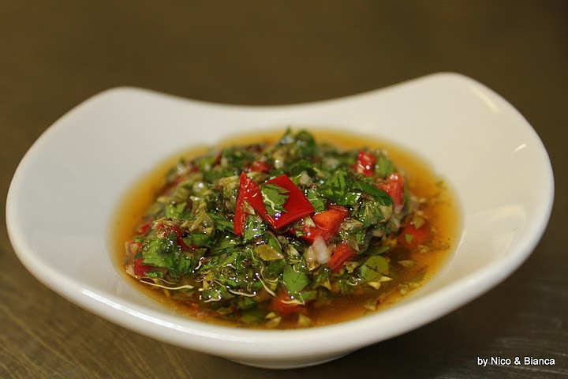

Home
Chopped Chimichurri Steak Salad

This chopped chimichurri steak salad is fresh,
vibrant, and packed with bold flavors from juicy
seared steak, crisp vegetables, and bright homemade
chimichurri. Perfect for lunch or dinner, it’s a hearty
yet refreshing salad that's put together in 30 minutes.
The Chopped Chimichurri Steak Salad turns a simple steak
dinner into a bright, texture-packed meal that hits
every major flavor note. At its core are tender,
thinly sliced ribbons of grilled steak—ideally a well-seared
flank or flat iron—laid over a crisp bed of finely
chopped romaine, crunchy red onions, and sweet cherry
tomatoes. What ties everything together is the bold,
herbaceous punch of fresh chimichurri. Instead of a
traditional heavy dressing, this garlic, parsley, and
oregano infusion serves double duty: it acts as a rich
marinade for the beef and a zesty, vinegar-forward dressing that
cuts right through the richness of the steak. It's a satisfying,
clean, and incredibly vibrant dish that proves a steak salad
never has to feel like an afterthought.
Ingredients
- 1 pound flank steak, trimmed
- 2 teaspoons kosher salt, divided
- 3/4 teaspoon freshly ground black pepper
- 2 tablespoons neutral oil, such as vegetable oil
- 1/2 cup extra-virgin olive oil
Steps:
- Preheat a large cast-iron skillet over medium-high heat.
-
Season steak with 1 teaspoon salt and 1/2 teaspoon pepper.
Add oil to the preheated skillet and carefully add the steak;
cook, flipping occasionally, until deeply browned and
an instant-read thermometer registers 120
degrees F (48.8 degrees C), 6 to 8 minutes per side.
Transfer steak to a cutting board and cover
with aluminum foil to rest for 10 minutes.
-
Meanwhile, whisk together extra-virgin olive oil,
parsley, cilantro, lemon juice, vinegar, garlic,
honey, oregano, crushed red pepper,
remaining 1 teaspoon salt, and 1/4 teaspoon
pepper in a small bowl.
-
Toss tomatoes, cucumbers,
roasted red bell pepper,
and red onion with 1/2 cup of
the dressing in a large serving bowl.
-
Slice rested steak against
the grain and cut into 1-inch pieces;
toss with salad and avocado. Drizzle
with remaining 1/4 cup dressing before serving.